My Directory Installation Document
- created: 05/04/2016
- latest update: 05/04/2016
- by: Techware Solutions
- email: info@techware.co.in
- Upload the source folder via ftp or file manager
- Create a database yourdbname.
- Using the link http://yoursitename.com/Installer run the installer
- Fill out your database details in the installer and save your changes.
- A form for filling out your site details, smtp details will appear, enter your details and save your changes.
- Now you will get your site url, admin url, admin password and username
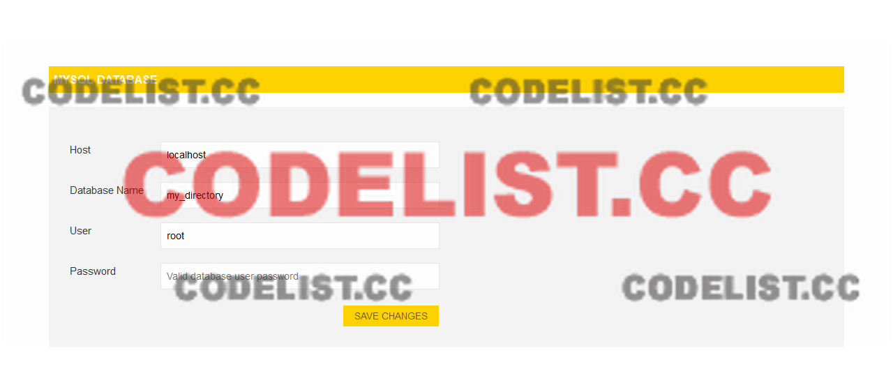 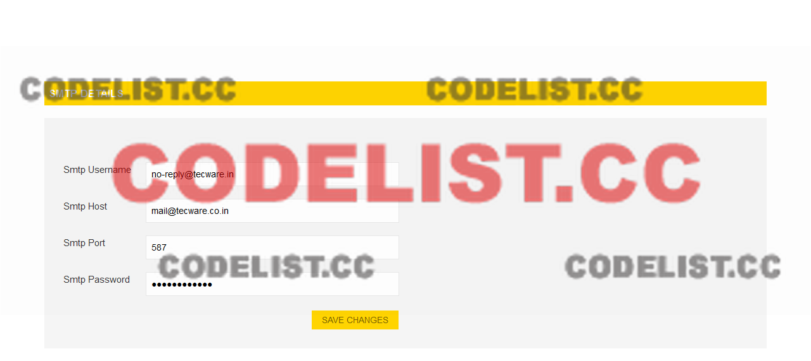
1. Getting Started
Installing My Directory
-
Registered User Features
- Easy and user friendly Sign up, Sign In and Account Password Recovery.
- Eye catching, user friendly and simple UI/UX.
- Can edit and manage user profile details and profile photo.
- Only approved profiles and photos will be shown in search and matching profile modules.
- Will show your most compatible daily recommendations
- Premium member profiles are highlighted and shown in the landing page.
- Filters are used for searching your most compatible and perfect match.
-
Admin Features
- Full Administration area to manage all Forums, Support Requests, Admins, Users and Site Settings
- Admin only area to manage All Registered Users
- Edit & Manage User Details as needed
- Create & Manage User Accounts
- Have access and can grant access to users to select and load places by default .
- Roles can be added and deleted as needed.
- Full control over settings used throughout the website
- Different payment packages can be added.
-
Admin Login Details
- Login using the following url with username and password admin, admin into the soulmate admin panel.
- Username:admin
- Password:admin
- URL:http://yoursitename.com/my_admin

2. User Details
User Details is for admin to add and manage the details of the new users in the backend.
Add New
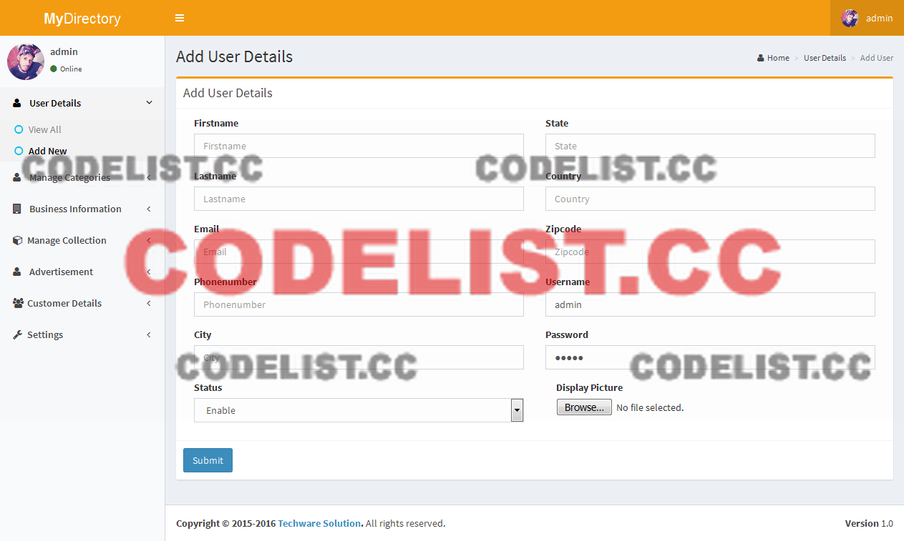View All
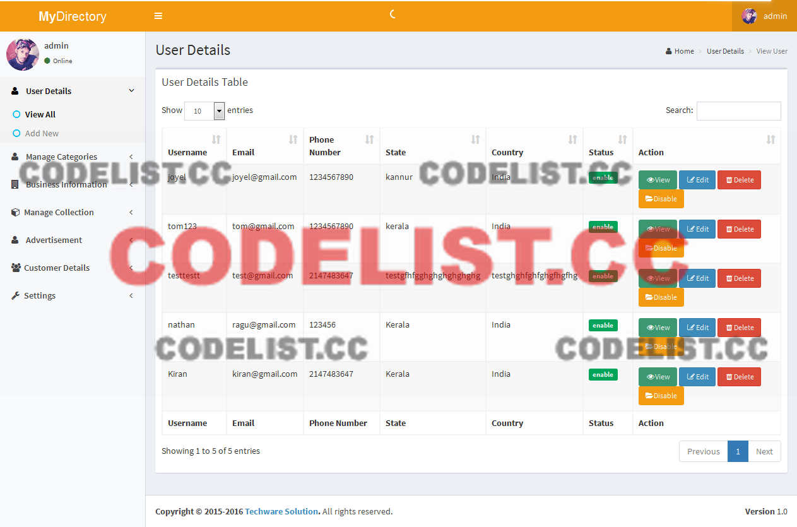3. Manage Categories
Manage Categories is for admin to add categories and set featured categories in the backend.
Category
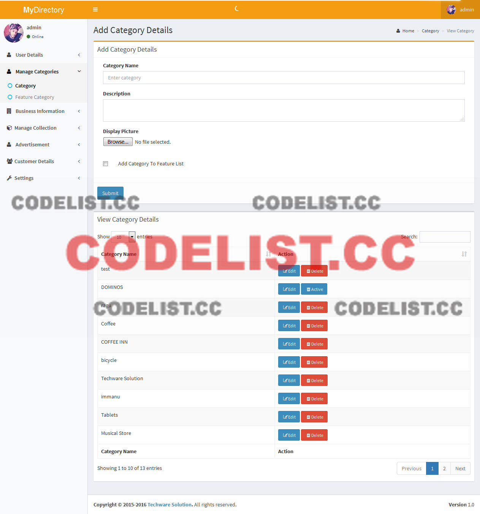Feature Category
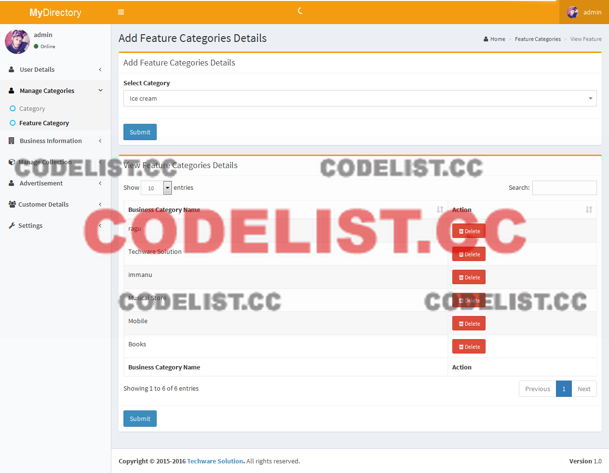4. Business Information
To add and manage the Business information .
Add New
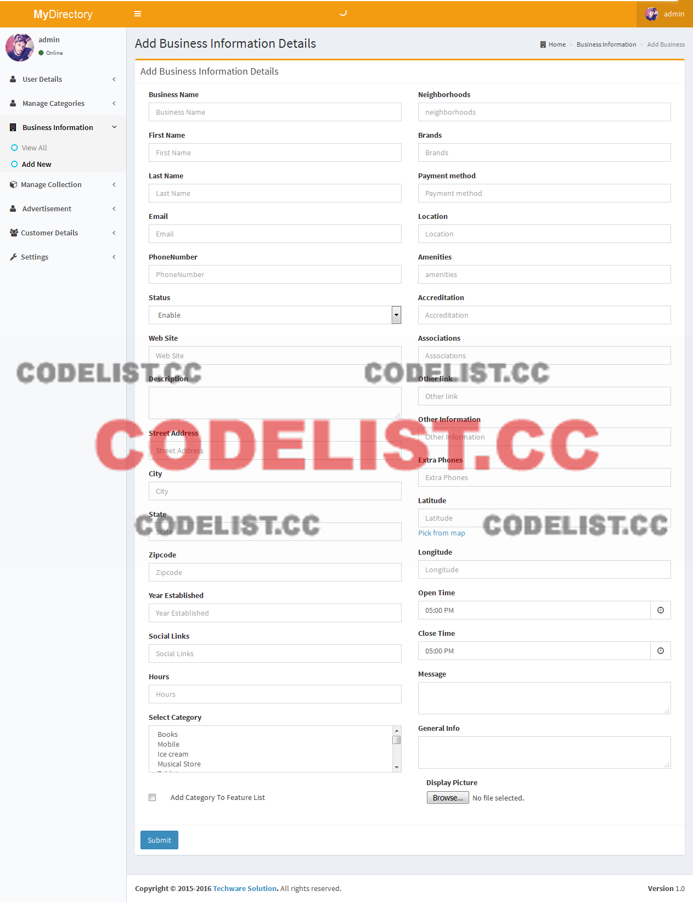View All
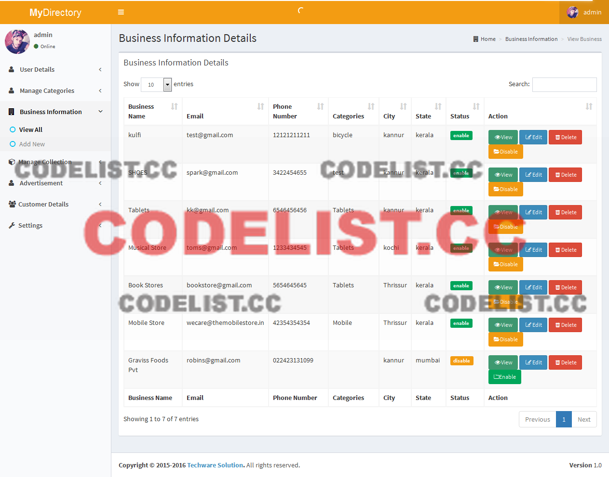5. Advertisement
Can add and manage the advertisement.
View Details

6. Customer Details
Admin added customer has to access the backend.
Add Details
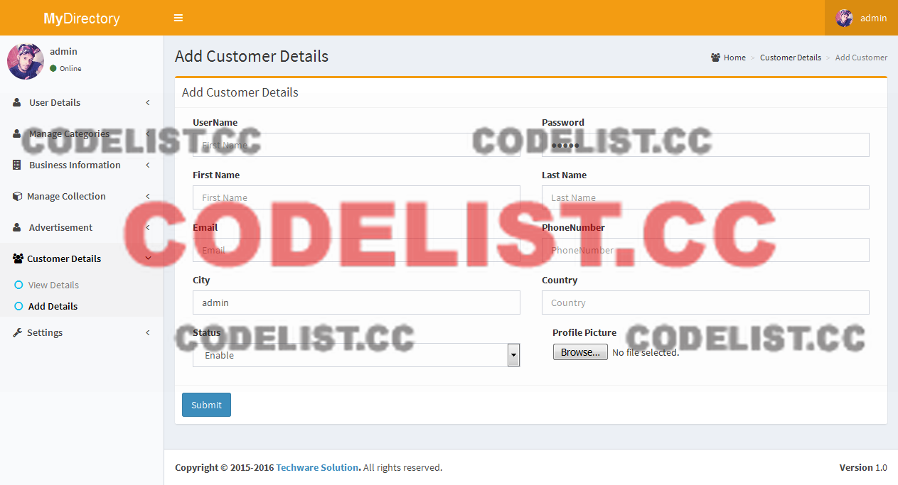Details List
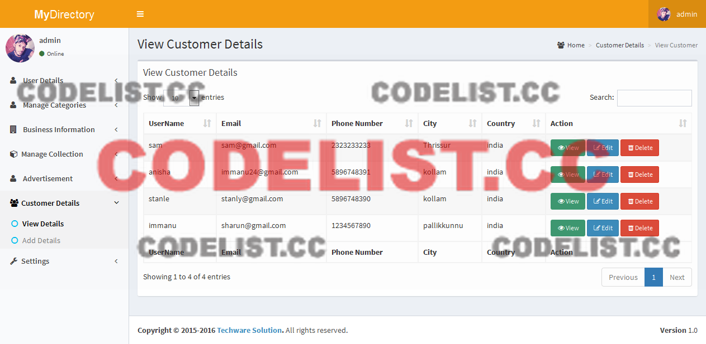7. Settings
This is the main part of the website, everything added in the front end can be edited and updated in this section. Here the logo, smtp details can be edited.
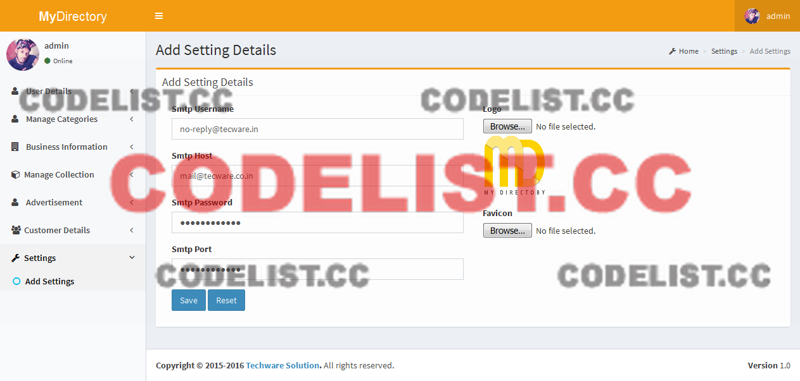